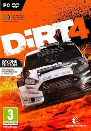

ABOUT THIS GAME
Motorsport by its very nature is dangerous. DiRT 4 is all about embracing that danger. It’s about the thrill, exhilaration and adrenaline that is absolutely vital to off-road racing. And more than that, it’s about loving that feeling. It’s about pushing flat out next to a sheer cliff drop. Going for the gap that’s slightly too small. Seeing how much air you can get in a truck. They call it ‘being fearless’.SYSTEM REQUIREMENTS
OS: 64bit Versions of Windows 7, Windows 8, Windows 10
Processor: AMD FX Series or Intel Core i3 Series
Memory: 4 GB RAM
Graphics: AMD HD5570 or NVIDIA GT440 with 1GB of VRAM (DirectX 11 graphics card required)
Network: Broadband Internet connection
Storage: 50 GB available space
Sound Card: DirectX Compatible soundcard